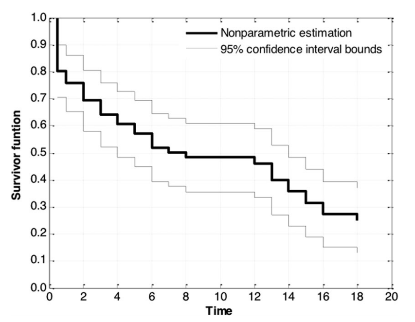
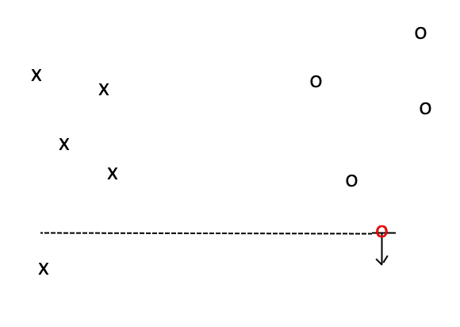
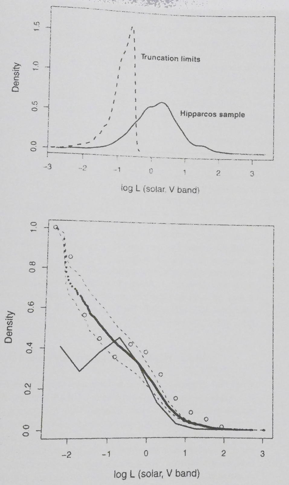

Censored and Truncated Data
Terms:
- truncation — undetected objects do not appear in the data in any form
- censoring — objects are detected, but within the observation limits of the desired variable
- left-censored — censored data which has an upper limit, so it is to the left of some value
R Functions:
- survival{survfit(Surv_object)}
- fitdistrplus{fitdistcens(censdata,distr)}
Survival Analysis
The survival function \(S(x)=1-CDF(x)\) is the probability that an object has a value above some level x.
While this is not used directly very often in astronomy, it can be used to infer information about censored data.
Censoring
Parametric Estimation
If we already know the distribution of a censored dataset, we can sometimes directly find the parameters of the distribution to account for the unknown values. For a Poisson distribution which has only 0-values truncated, we have simply \(\frac{\hat{\lambda}}{1-e^{-\hat{\lambda}}}=\bar{X}\).
Kaplan-Meier (KM) Nonparametric Estimator
The EDF of a sample with censoring can be found by redistributing nondetections into the sample with weights associated with the probability that an object is below a certain level.
Two Sample Tests
This is the same question that we asked before regarding whether two samples come from the same distribution. The simplest test for censored samples is the Gehan test, which is a generalized Wilcoxon test. The Gehan statistic is the sum of all cross-sample comparisons, where each individual comparison value is 1 for a value greater than the other point, -1 for a value less than the other, and 0 for ill-determined relationships.
Truncation
Truncation is harder to deal with than censoring, for obvious reasons, but a few methods exist. One is the Lynden-Bell-Woodroofe estimator, which is quite similar to the KM estimator, except it is based on a truncation limit instead of censored values.
